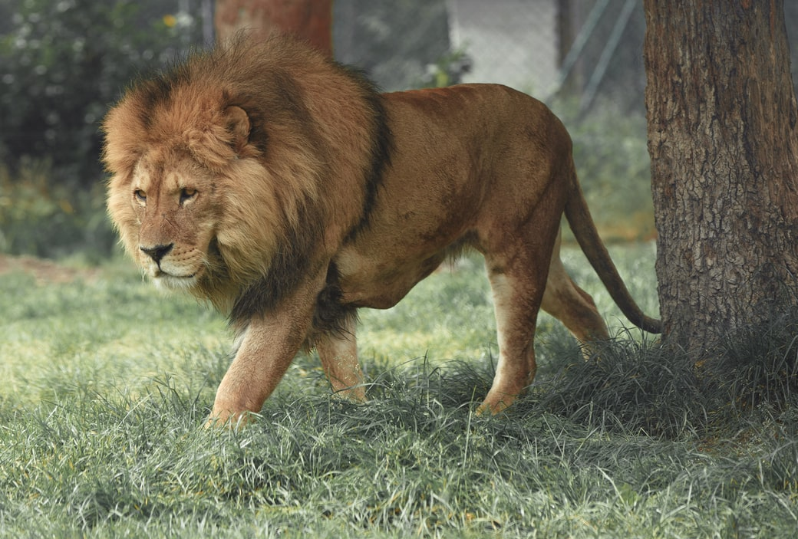
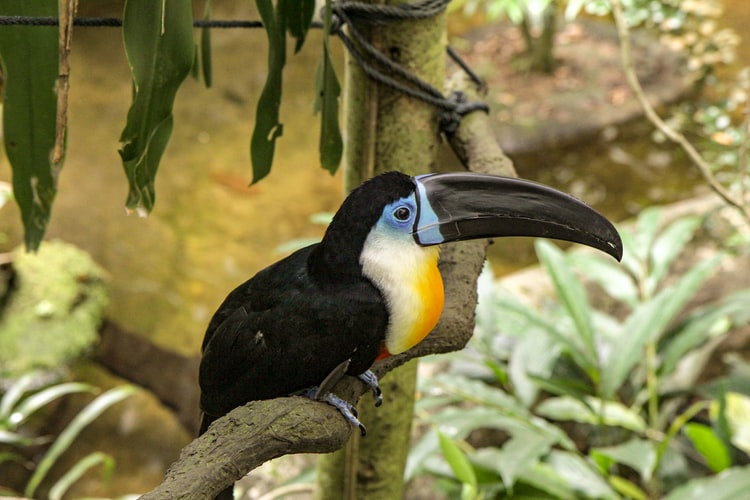

Anaconda
Often misunderstood creatures are anacondas. There lies a possibility
for this to happen due to bollywood film series carrying the same name
and its impression.
This kind of enourmous snake doesn't exist in Sri Lanka
and is mostly to be found in African and South American areas.
It may kill
when it is hungry but they do not attack without reason. Anacondas aren't venomous snakes either.

Lion
It is quite surprising that lions aren't found in Sri Lanka as it is used
in many places for official purposes. Inspired by the lion as it is
the
king of the jungle, Lankans proudly bear it in their National
Flag and Cricket Team. The female normally hunts
for the male
is surprising. Male is clearly distinguishable due to the great mass of fur on its face.
Crocodile
Most being large, scaly and unforgiving, crocodiles are considered as a
brute in the amphibian family. Catching its pray on both land and
water makes its a
feared creature. Can be found in the wetland of Sri Lanka and in
marshlands. Typical habitats of it are the many
rivers to be
found in all parts of Lanka.

Hornbill
A beautiful with a lot of variations of species and can be founf all over Sri Lanka.
A species that attracts a lot of bird watchers to the
country as well.
Sometimes these birds can even be found in semi-industrial areas as well but
to be mostly found in the wide
spread of
forests within the country.
Piranha
"Unity is strenghth" can be observed from these small but deadly
fish. The sharp razor teeth that they posses have the ability to do much more
than just a scratch.
A single fish might not be able to do
a lot of damage but a school of them might be even able to devour
a fully
grown human being. Not to be found in Sri Lanka.
Elephant
One of the most celebrated and high calibre animal living in Sri
Lanka. An animal which is very well respected and is even used in religuos
activities. They are
also considered to be having very high brain capacity. To be found at large in
wild sanctuaries but almost about
90% of the
population lives in the highly densed parts of the forest.